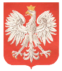
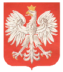

| Common Polish First Names | Common Ukrainian First Names | Feast Days of the Roman Calendar |
Below is a list of common first names in Poland. These names are based on the saints and the feast days as found in the old-style Proper of the Saints of the Roman Calendar. The names in parenthesis are the English variations. More than one saint's name and feast day may follow a single first name. Note: In 1969, the dates of celebration of feast days were changed for many saints.
A - B - C - D - E - F - G - H - I - J - K - L - M - N - O - P - R - S - T - U - W - Z
Adalbert (Adalbert, George) -- Adalbert of Prague, patron
of Prussia, Bohemian, April 23
Adam (Adam) -- December 24
Agata (Agatha) -- February 5
Agnieszka (Agnes) -- Agnes January 21; Blessed Agnes, Bohemian,
March 2
Albert (Albert) -- Albert the Great November 15
Aleksander (Alexander) -- May 3
Aleksandra, see Olga
Aleksy (Alexis) -- July 17
Alfons (Alphonsus) -- Alphonsus Liguori August 2
Alojzy (Aloysius) -- Aloysius Gonzaga June 21
Ambrozy (Ambrose) -- December 7
Anastazia, Anastazja (Anastasia) -- December 25
Andrzej (Andrew) -- Andrew Corsini February 4; Andrew Avellino
November 10; Andrew, patron of Russia November 30
Aniela (Angela) -- Angela Merici January 27, May 31, June 1
Anna (Anna) -- mother of Mary July 26
Antoni, Antonin (Anthony, Antonius) -- Anthony, abbot January
17; Anthony, bishop May 10; Anthony of Padua June 13; Anthony,
d.c. 1342, Lithuanian,June 14; Anthony Mary Zaccaria July 5; Anthony
Perchersky, Ukrainian, July 10
Antonia, Antonina (Antoinette, Antonina) -- February 28, May 4, June
12
Apolinarius (Appollinaris) -- July 23
Apolonia (Pauline) -- February 9
Apolonius (Apollonius) -- April 18
August, Augustyn (Augustine) -- Augustine of Canterbury May 28;
Augustine of Hippo, Doctor of the Church August 28
Baltazar (Balthasar) -- January 6, July 23
Barbara (Barbara) -- December 4
Barnabas (Barnabas) -- Barnabas the Apostle June 11
Bartlomiej (Bartholomew) -- Bartholomew the Apostle August 24; Bartholomew
November 11
Bazyli (Basil) -- Basil the Great June 14
Bede (Bede) -- Bede the Venerable May 27
Benedykt (Benedict) -- Benedict, abbot March 21; Benedict, Polish,
April 23; Benedict, Pope July 11
Bernard (Bernard) -- August 20
Bernardyn (Bernadine, male) -- May 20
Bibiana (Bibiana, Viviana) -- December 2
Blazej (Blaise) -- February 3
Bogumil (Bogimilus, Theophilus) -- Polish, June 10; see Teofil
Boleslaw (Boleslaus, William)
Boleslawa (Boleslava, Wilhelmina, Mina)
Bonifacy (Boniface) -- Boniface of Tarsus May 14; Boniface, Apostle
of Germany June 5; Boniface, Second Apostle of the Prussians June 19
Bozena ("of God"), see Teodora and Teodozia
Bronislaw (Bronislaus, Bruno)
Bronislawa (Bronislava, Bernice, Bertha) -- Polish, September 3
Brunon (Bruno) -- patron of Ruthenia (Ukraine) October 6
Brygida (Bridget, Birgitta) -- patron of Sweden October 8
Cecylia (Cecelia) -- November 22
Cyprian (Cyprian) -- Cyprian, bishop September 16; Cyprian, martyr
September 26
Cyryl (Cyril) -- Cyril of Alexandria February 9; Cyril of Jerusalem
March 18; Cyril (of Saints Cyril and Methidius) Slavic, July 7
Czeslaw (Ceslaus, Chester) -- Polish, July 17 and 28
Czeslawa (feminine of Czeslaw, Ceslava) -- also see Teresa
Dawid (David) -- Dewi of Wales March 1; David, Russian, September
19; King David December 30
Doloreta (Dolores) -- Seven Sorrows (Dolores in Latin) of the Blessed Virgin
Mary September 15
Domicylla, Domitilla (Domitilla) -- May 7 and 12
Dominik (Dominic) -- August 4
Dorota (Dorothy) -- Dorothy of Montau, patroness of Prussia October
30
Edmund (Edmund) -- November 20
Edward (Edward) -- March 18, October 13
Elzbieta (Elizabeth) -- Elizabeth, Queen of Portugal July 8; Elizabeth
of Hungary November 19
Emilia, Emiliana (Emiliana, Emily) -- August 24, December 24
Ewa (Eve) -- the eve of Christmas day December 24
Fabian (Fabian) -- January 20
Felicia (Felice, Felicity, Phyllis) -- March 6
Feliks (Felix) -- Felix of Nola, priest/martyr January 14; Felix
I, Pope May 30; Felix, martyr July 12; Felix II, Pope July 29;
Felix, martyr August 30; Felix of Valois November 20
Filip (Philip) -- Philip, Apostle May 1, May 11; Philip Neri
May 26; Philip Benizi August 23
Florentyna (Flora, Florence) -- June 20, November 24
Florjan (Florian) -- patron of Poland and Upper Austria May 4
Franciszek (Francis, Frank) -- Francis de Sales January 29; Francis
of Paola April 2; Francis Caracciolo June 4; Francis of Assisi
October 4; Francis Borgia October 10
Franciszek Ksawery (Francis Xavier) -- December 3
Franciszka (Frances) -- March 9
Fryderyk (Frederick) -- July 18
Gabriel (Gabriel) -- Archangel March 24
Genowefa (Genevieve) -- January 3
Giertruda (Gertrude) -- November 16
Grzegorz (Gregory) -- Gregory the Great, Pope March 12; Gregory
Nazianzen May 9; Gregory VII, Pope May 25; Gregory the Wonder-worker
November 17
Gustaw (Gustav, August, Augustine) -- see August, Augustyn
Gwidon (Guy) -- September 12
Halina, Helena (Helen) -- August 18
Henryk (Henry) -- Henry of Bavaria, Emperor of Germany July 15
Henryka (Henrietta, Hattie) -- feminine of Henryk
Hiacynt, Jacek (Hyacinth, male) -- Hyacinth, patron of Poland (Hyacinth
Ronski) August 17; Hyacinth September 11
Hiacynta, Jacinta (Hyacintha, female) -- January 30
Hieronym (Jerome, Henry) -- Jerome Emilian July 20; Jerome, Doctor
of the Church September 30
Hipolit (Hippolytus) -- August 13
Honorata (Honorata) -- January 11
Honoratus (Honoratus) -- January 16
Ignacy (Ignace, Ignatius) -- Ignatius, bishop/martyr February 1;
Ignatius of Rostov Russian, May 28; Ignatius of Loyola July 31
Irena, Irina (Irene) -- April 3
Isabela (Isabelle) -- Elizabeth of Portugal (born Isabella) July 4 and
8
Izydor (Isidore) -- Isidore of Alexandria January 15; Isidore the
Farmer March 22; Isidore of Seville, bishop April 4; Isidore of
Chios May 15; Isidore December 14
Jacek -- see Hiacynt
Jacinta -- see Hiacynta
Jadwiga (Hedwig, Hattie) -- Blessed Hedwig, Queen of Poland February
28; Hedwig, patroness of Silesia October 16
Jakub (Jacob, James) -- James the Lesser Apostle May 1 and 11; James
the Greater, Apostle July 25
Jan (John) -- John Chrysostom January 27; John of Matha February
8; John of God March 8; John Damascene March 27; John Capistran
March 28; John the Apostle, Before the Latin Gate May 6; John
Lithuanian, April 14; John of San Facundo June 12; John Gualbert
July 12; John of Dukla, patron of Poland and Lithuania July 10 and September
28; John of the Cross November 24; John, Apostle and Evangelist
December 27
Jan Baptysta, Jan Chrzciciel (John the Baptist) -- birth of June 24;
beheading of August 29
Jan Jozef (John Joseph) -- March 5
Jan Kanty (John Cantius) -- patron of Poland and Lithuania October 20
Jan Nepomucen (John Nepomucene) -- patron of Czechoslovakia May 16
Januariusz (Januarius, January, John) -- September 19
Jerzy (George) -- patron of England and Germany April 23
Joachim, Joakim (Joachim) -- August 16
Joanna (Joanne, Jane, Jean, Joan, Jennie) -- Joan of Arc May 30;
Jane Frances de Chantal August 21
Jolanta, Jolenta (Yolanda) -- Blessed Jolenta (Helen of Poland), Polish/Hungarian,
June 12 and 14
Jozef (Joseph) -- Joseph, father of Jesus March 19; Joseph the Workman
May 1; Joseph of Cupertino September 18
Jozefa, Jozefina (Josephine) -- feminine of Jozef
Jozefat (Josaphat) -- Polish/Lithuanian, November 14
Julia (Julia, Julie) -- May 22
Julian (Julian) -- January 9
Juliana (Julianna, Julie) -- Juliana Falconieri June 19
Justin, Justyn (Justin) -- April 14
Justina, Justyna (Justina) -- September 26
Kajetan (Cajetan) -- August 7
Kamil (Camile, Camillus, male) -- Camile of Lellis July 18
Kamila (Camila, Camille, female) -- feminine of Kamil
Karol (Karl, Charles) -- Blessed Charlemagne of France January 28;
Charles Borromeo November 4
Karolina (Carolina, Charlotte) -- feminine of Karol
Kasper (Caspar) -- Caspar, one of the Magi January 6, July 23; Caspar
del Bufalo January 2
Katarzyna (Catherine) -- Catherine of Siena April 30; Catherine
of Alexandria November 25
Kazimierz, Kazmierz (Casimir) -- patron of Poland and Lithuania March
4
Klara (Clara, Clare) --August 12
Klemens, Klement (Clemence, Clement) -- Clement January 23; Clement
February 13; Clement Slovensky of Okhrida, Apostle of Bulgaria July
17 and 27; Clement I, Pope November 23
Klementyna (Clementine) -- feminine of Klemens
Konrad(Conrad) -- Blessed Conrad of Bavaria February 14 and March 15;
Conrad of Piacenza February 19; Conrad of Swabia, bishop of Trèves
June 1; Conrad of Constance, bishop November 26
Konstanty (Constant, Constantine) -- Constantine, King of Cornwall (first
martyr of Scotland) March 11; Constantine Russian, September 19
Konstantyna (Constance) -- feminine of Konstanty
Krystyna (Christine) -- Christine of Bolsena and two Christinas July
24; Christina (also called Nino), Apostle of Georgia Russian, December
15
Krzysztof (Christopher) -- July 25
Kunegunda (Cunegunda) -- Cunegunda of Luxembourg and Bavaria March 3;
Blessed Cunegunda (also known as Kinga), patroness of Poland and Lithuania
Polish/Hungarian, July 21 and 23
Leokadia (Leocadia, Laura) -- December 9
Leon (Leo) -- Leo I the Great, Pope April 11; Leo IX, Pope April
19; Leo III, Pope June 12; Leo II, Pope July 3; Leo IV, Pope
July 17
Leonard (Leonard, Leon) -- November 6
Lidia (Lydia) -- August 3
Lorenz (Lawrence) -- Lawrence of Brindisi July 21; Lawrence, martyr
August 10; Lawrence Justinian September 4 and 5
Lucja (Lucy) -- Lucy, martyr September 16; Lucy of Sicily, martyr
December 13
Lucjan (Lucian) -- Lucian of Antioch January 7; Lucian of Beauvais
January 8; Lucian October 26
Ludmila (Ludmila) -- Bohemian, September 16
Ludwik (Louis) -- Louis IX, King of France August 25
Ludwika (Louise) -- March 15
Lukasz (Lucas, Luke) -- Luke the Evangelist October 18
Maciej (Matthew) -- Matthew, Apostle and Evangelist September 21
Magdalena (Mary Magdalene, Madeline) -- Mary Magdalen del Pazzi May
29; Mary Magdalene July 22
Maksymilian (Maximilian) -- Maximilian March 12; Maximilian of Lorch
October 12; Maksymilian Kolbe Polish, August 14
Malgorzata, Margarita (Margaret) -- Margaret of Hungary January 18 and
26; Margaret, Queen of Scotland June 10; Margaret July 20
Marcelian (Marcellianus) -- twin of Mark June 18
Marcianna, Martyna (Marcyanna, Martina) -- Marciana January 9; Martina
January 30
Marcin (Martin) -- Martin of Tours November 11; Martin I, Pope
November 12
Marek (Mark) -- Mark the Evangelist April 25; Mark, twin of Marcellianus
June 18; Mark, Pope October 7
Maria, Marja, Marya (Mary) -- Feast Days of the Blessed Virgin Mary: Solemnity
of Mary, Mother of God January 1; Purification of the BVM February 2;
Annunciation of the BVM March 25; Queenship of the BVM May 31;
Visitation of the BVM to Elizabeth July 2; Assumption of the BVM
August 15; Immaculate Heart of Mary August 22; Our Lady of Czestochowa,
patroness of Poland August 26; Nativity of the BVM September 8;
Most Holy Name of Mary September 12; BVM of the Rosary October 7;
Immaculate Conception December 8
Marta (Martha) -- Martha, martyr January 19; Martha (sister of Mary
Magdalene and Lazarus) July 29
Martyna -- see Marcianna
Mateusz (Mathias) -- Mathias (the Apostle who took the Place of Judas)
February 24 and 25; also see Maciej
Melchior (Melchior) -- January 6 and July 23
Metody (Methodius) -- Cyril and Methodius (Apostles of the Slavs) Slavic,
July 7
Michal, Mieczyslaw (Michael) -- Apparition of Michael the Archangel
May 8; Michael of Chernigov Ukrainian/Russian, September 21; Michael
the Archangel September 29
Michalina (Michalina) -- June 20
Mieczyslaw (Miecislaus) -- Mieczyslaw I (King of Poland who accepted Christianity
on behalf of all Poland) January 1
Mikolaj (Nicholas) -- Nicholas of Tolentino September 10; Nicholas
I the Great, Pope November 13; Nicholas, patron of Russia December 6
Monika (Monica, Mona) -- mother of St. Augustine May 4
Nicodem (Nicodemus) -- Nicodemus of the Holy Mountain July 14
Norbert (Norbert) -- Norbert of Germany June 6
Olenka -- see Olga
Olga (Alexandra, Sandra, Olga) -- Russian/Ukrainian, July 11
Onufrius, Onufry (Onuphrius) -- June 12
Otto (Otto) -- Otto July 2 and 3, and September 30
Paulina (Pauline) -- January 26
Pawel (Paul) -- Paul the Hermit January 15; Conversion of Paul the
Apostle January 25; Paul of the Cross April 28; Paul
the Apostle June 29 and 30; Dedication of the Basilicas of Peter and Paul
November 18
Pelagia (Pelagia, Paula, Pauline) -- Pelagia of Tarsus May 4; Pelagia
of Antioch June 9; Pelagia the Penitent October 8
Petronela (Petronilla) -- May 31
Piotr (Peter) -- Chair of St. Peter at Rome January 18; Peter Nolasco
January 28; Chair of St. Peter at Antioch February 22; Peter Damian
February 23; Peter Canisius, Second Great Apostle of Germany April 27;
Peter of Verona April 29; Peter I Celestine, Pope May 19; Peter,
martyr June 2; Peter the Apostle June 29; Peter's Chains (the Apostle)
August 1; Dedication of the Basilicas of Peter and Paul November 18;
Peter Chrysologus December 4
Prakseda (Prazedes, Praxey) -- July 21
Rafal, Rafael (Raphael) -- Archangel October 24
Rajmund (Raymond) -- Raymond of Pennafort January 23; Raymond Nonnatus
August 31
Regina (Regina) -- September 7
Roch (Roch, Rock) -- August 16
Roman (Roman) -- August 9
Romuald (Romuald, male) -- February 7
Romualda (Romualda, Roma) -- feminine of Romuald
Róza (Rose) -- Rose of Lima August 30
Rozalia (Rosalie, Rose) -- Rose of Viterbo September 4
Ryszard (Richard) -- February 7
Sabina (Sabina) -- August 29
Salomeja (Salome, Sarah) -- Salome, mother of James and John the Apostles
October 22; Blessed Salome Polish, November 6, 17 and 18
Saturnin (Saturnin) -- November 30
Sebastian (Sebastian) --January 20
Seweryn (Severin) -- Severinus of Noricum January 5
Simeon, Szymon (Simeon) -- Simeon the Stylite January 5;
Simeon, bishop/martyr February 18; Simeon (the old man in the Temple)
October 8; see also Szymon
Sofia, Zofia (Sophie) -- September 30
Stanislaw (Stanislaus, Stanley) -- Stanislaus, Bishop of Kraków May
7; Stanislaus Kostka, patron of Poland November 13
Stanislawa (Stanislava, Stella) -- feminine of Stanislaw
Stefan, Szczepan (Stephen, Steven) -- Stephen of Perm Russian, April
26; Stephen Pechersky Ukrainian, April 27; Stephen I, Pope August
2; Finding the Body of Stephen the First Martyr August 3; King Stephen,
patron of Hungary September 2; Stephen the First Martyr December 26
Stefania (Stephanie) -- feminine of Stefan
Sylwester (Sylvester) -- Sylvester, abbot November 26; Sylvester,
Pope December 31
Szczepan (Stephen, Steven) -- see Stefan
Szymon (Simon) -- Simon of Lipnica Polish, July 15 and 30; Simon
the Zealot, Apostle October 28
Tadeusz (Thaddeus,
Ted) -- Jude Thaddeus the Apostle October 28
Tekla (Thecla, Tillie) -- September 23
Teodor (Theodore, Ted) -- Theodore the Black Russian, September 19;
Theodore Ukrainian/Russian, September 21; Theodore, martyr and soldier
November 9; Theodore Graptoi December 27
Teodora (Theodora, Dora, Dorie) -- April 28 and September 17
Teodozja (Theodosia) -- April 2 and May 29
Teodozjusz (Theodosius) -- Theodosius Pechersky, abbot (also known as Theodosius
of the Caves of Kiev) Ukrainian/Russian, May 3 and July 10
Teofil (Theophilus) -- Theophilus the Penitent February 4
Teofila (Theophila) -- feminine of Teofil
Teresa, Tereza, Czeslawa (Theresa) -- Teresa of Avila October 15
Timoteusz (Timothy) -- Timothy, bishop January 24; Timothy, martyr
August 22
Tomasz (Thomas) -- Thomas Aquinas March 7; Thomas of Villanova
September 22; Thomas Cantelupe of Hereford October 3; Thomas Becket
December 29
Urban (Urban) -- Urban I, Pope May 25
Urzula (Ursula) -- October 21
Waclaw (Wenceslaus, Walter) -- patron of Czechoslovakia Bohemian,
September 28
Waclawa (Violet) -- feminine of Waclaw
Walburga (Walburga) -- February 25
Walenty (Valentine) -- Valentine, abbot January 7; Valentine, bishop/martyr
February 14
Walentyna (Valentina) -- July 25; feminine of Walenty
Walerian, Walery (Valerian, Valery) -- April 14
Wanda (Wanda) -- Wanda, Queen, daughter of King Kark of Kraków Vislanian
(pre-Christian Polish)
Wawrzyniec (Lawrence) -- see Lorenz
Weronika (Veronica) -- July 12
Wicenty, Wincenty (Vincent) -- Vincent of Saragossa (Spain), martyr
January 22; Blessed Wincenty Kadlubek, bishop of Kraków Polish, October
11; Vincent Ferrer April 5; Vincent de Paul July 19
Wiktor (Victor) -- Victor of Marseilles, martyr July 21; Victor
I, Pope July 28
Wiktoria, Wiktorya (Victoria) -- Victoria, martyr February 11; Victoria,
martyr December 20 and 23
Wilhelm (William, Bill) -- June 25
Wilhelmina (Wilhelmina, Mina) -- feminine of Wilhelm
Wincenty -- see Wicenty
Wita, Witus (Vitus) -- June 15
Wladimir (Vladimir) -- Vladimir of Kiev, patron of Russia July 15
Wladyslaw (Ladislaus, Walter) -- Blessed Ladislaus of Gielnów, patron of
Poland, Galicia, and Lithuania May 11; Ladislaus, King of Hungary June
27
Wojciech (Adalbert, Albert, George) -- April 23
Zachariasz (Zachary) -- Zachary, Pope March 15 and 22; Zachary,
father of John the Baptist November 5 and 15
Zenon (Zenon) -- December 22
Zofia, Sofia (Sophie) -- September 30
Zuzanna (Susanna, Susan) -- Susanna (also called Anne), martyr July
23; Susanna, martyr August 11; Susanna, martyr October 17
Zygmunt (Sigismund, Sigmund) -- Zygmunt III Wasa, King of Poland October
31; Sigismund, King of the Burgundians, martyr December 30
Zyta (Zita) -- April 27
Below is a list of Ukrainian first names and the feast dates on the Julian Calendar with which they are associated. The spellings below are the English equivalent of the Cyrillic alphabet.
| -
A - August -- August 28 Augusta, Augustina -- November 23 Avrele, Avrela -- December 23 Agatha -- February 5 Agnes -- July 5 Ada -- October 21 Adam -- January 14 Alexander, Oles, Les -- August 30 Alexandria, Olesia, Lesia, Sandra -- August 30 Alvina -- May 4 Ambrose -- December 7 Amelia, Emily -- August 8 Amilian, Emil -- August 8 Anastasia, Stasia -- December 22 Anatole -- July 3 Angeline -- December 10 Andrew, Andriy -- November 30 Andrian -- August 26 Andriana -- August 26 Anina -- March 13 Ann, Hannah -- March 10 Anthony -- July 10 Antonina, Antonia -- June 10 Apollinary -- July 23 Apollinaria -- January 5 Apollonia -- December 14 Arkadiy, Arkad -- January 26 August -- August 28 Augusta, Augustina -- November 23 - B -
- C -
- D -
- E -
- F -
-G -
- H -
- I -
- J -
- K -
- L -
|
- M - Magdalyna -- July 20 Maksym, Max -- August 13 Marcel -- August 1 Margaret -- February 27 Maria, Mary -- September 8 Marian -- December 10 Marianna -- February 16 Markian, Mark -- August 9 Marko, Mark -- April 25 Martha -- June 4 Martin -- April 14 Maryna -- March 12 Matthew -- November 16 Maura, Moira -- October 31 Maya, May -- January 26 Maximillian, Max -- October 22 Mecheslav -- December 19 Mecheslava -- December 19 Melania -- December 31 Methodius -- July 5 Michael -- November 8 Michaelina -- November 8 Mina -- November 11 Monica -- April 1 Mstyslav -- April 15 Mstyslava -- April 15 Mykyta -- September 15 Myron -- August 18 Myroslav -- May 5 Myroslava -- May 5 - N -
- O -
- P -
- R -
- S -
- T -
- U -
- V -
- Y -
- Z -
|
January 1 -- Solemnity of Mary, Mother of God; Mieczyslaw I 2 -- Caspar del Bufalo 3 -- Genevieve 5 -- Severinus of Noricum; Simeon the Stylite 6 -- Balthasar; Caspar, one of the Magi; Melchior 7 -- Lucian of Antioch; Valentine, abbot 8 -- Lucian of Beauvais 9 -- Julian; Marciana 11 -- Honorata 14 -- Felix of Nola, priest/martyr 15 -- Isidore of Alexandria; Paul the Hermit 16 -- Honoratus 17 -- Anthony, abbot 18 -- Margaret of Hungary; Chair of St. Peter at Rome 19 -- Martha, martyr 20 -- Fabian; Sebastian 21 -- Agnes 22 -- Vincent of Saragossa (Spain), martyr 23 -- Raymond of Pennafort; Clement 24 -- Timothy, bishop 25 -- Conversion of Paul the Apostle 26 -- Margaret of Hungary; Pauline 27 -- Angela Merici; John Chrysostom 28 -- Blessed Charlemagne of France; Peter Nolasco 29 -- Francis de Sales 30 -- Martina February 1 -- Ignatius, bishop/martyr 2 -- Purification of the BVM 3 -- Blaise 4 -- Andrew Corsini; Theophilus the Penitent 5 -- Agatha 7 -- Romuald; Richard 8 -- John of Matha 9 -- Cyril of Alexandria 11 -- Victoria, martyr 13 -- Clement 14 -- Blessed Conrad of Bavaria; Valentine, bishop/martyr 18 -- Simeon, bishop/martyr 19 -- Conrad of Piacenza 22 -- Chair of St. Peter at Antioch 23 -- Peter Damian 24 -- Mathias (the Apostle who took the Place of Judas) 25 -- Mathias (the Apostle who took the Place of Judas); Walburga 28 -- Antonia, Antonina; Blessed Hedwig, Queen of Poland March 1 -- Dewi of Wales 2 -- Blessed Agnes, Bohemian 3 -- Cunegunda of Luxembourg and Bavaria 4 -- Casimir, patron of Poland and Lithuania 5 -- John Joseph 6 -- Felicia 7 -- Thomas Aquinas 8 -- John of God 9 -- Frances 11 -- Constantine, King of Cornwall (first martyr of Scotland) 12 -- Gregory the Great, Pope; Maximilian 15 -- Blessed Conrad of Bavaria; Louise; Zachary, Pope 18 -- Cyril of Jerusalem; Edward 19 -- Joseph, father of Jesus 21 -- Benedict, abbot 22 -- Isidore the Farmer; Zachary, Pope 24 -- Gabriel, Archangel 25 -- Annunciation of the BVM 27 -- John Damascene 28 -- John Capistran April 2 -- Francis of Paola; Theodosia 3 -- Irene 4 -- Isidore of Seville, bishop 5 -- Vincent Ferrer 11 -- Leo I the Great, Pope 14 -- John, Lithuanian; Justin; Valerian 19 -- Leo IX, Pope 23 -- Adalbert of Prague, patron of Prussia, Bohemian; Benedict, Polish; George, patron of England and Germany 25 -- Mark the Evangelist 26 -- Stephen of Perm, Russian 27 -- Peter Canisius, Second Great Apostle of Germany; Stephen Pechersky, Ukrainian; Zyta 28 -- Paul of the Cross; Theodora 29 -- Peter of Verona 30 -- Catherine of Siena May 1 -- James the Lesser Apostle; Joseph the Workman; Philip, Apostle 3 -- Alexander; Theodosius Pechersky, abbot, Ukrainian/Russian 4 -- Antonia, Antonina; Florian, patron of Poland and Upper Austria; Monica, mother of St. Augustine; Pelagia of Tarsus 6 -- John the Apostle, Before the Latin Gate 7 -- Domitilla; Stanislaus, Bishop of Kraków 8 -- Apparition of Michael the Archangel 9 -- Gregory Nazianzen 10 -- Anthony, bishop 11 -- James the Lesser Apostle; Philip, Apostle; Blessed Ladislaus of Gielnów, patron of Poland, Galicia, and Lithuania 12 -- Domitilla 14 -- Boniface of Tarsus 15 -- Isidore of Chios 16 -- John Nepomucene, patron of Czechoslovakia 19 -- Peter I Celestine, Pope 20 -- Bernadine 22 -- Julia 25 -- Gregory VII, Pope; Urban I, Pope 26 -- Philip Neri 27 -- Bede the Venerable 28 -- Augustine of Canterbury; Ignatius of Rostov, Russian 29 -- Mary Magdalen del Pazzi; Theodosia 30 -- Felix I, Pope; Joan of Arc 31 -- Angela Merici; Queenship of the BVM June 1 -- Angela Merici; Conrad of Swabia, bishop of Trèves 2 -- Peter, martyr 4 -- Francis Caracciolo 5 -- Boniface, Apostle of Germany 6 -- Norbert of Germany 9 -- Pelagia of Antioch 10 -- Bogumil, Polish; Margaret, Queen of Scotland; Theodosius Pechersky, abbot, Ukrainian/Russian 11 -- Barnabas the Apostle 12 -- Antonia, Antonina; John of San Facundo; Blessed Jolenta (Helen of Poland), Polish/Hungarian 12 -- Leo III, Pope; Onuphrius 13 -- Anthony of Padua 14 -- Anthony, d.c. 1342, Lithuanian; Basil the Great; Blessed Jolenta (Helen of Poland), Polish/Hungarian 15 -- Vitus 18 -- Marcellianus, twin of Mark; Mark, twin of Marcellianus 19 -- Boniface, Second Apostle of the Prussians; Juliana Falconieri 20 -- Flora, Florence; Michalina 21 -- Aloysius Gonzaga 24 -- John the Baptist, birth of; Christine of Bolsena and two Christinas 25 -- William 27 -- Ladislaus, King of Hungary 29 -- Paul the Apostle; Peter the Apostle 30 -- Paul the Apostle 31 -- Petronilla |
July 2 -- Visitation of the BVM to Elizabeth; Otto 3 -- Otto 4 -- Elizabeth of Portugal (born Isabella) 5 -- Anthony Mary Zaccaria 7 -- Saints Cyril and Methidius, Slavic 8 -- Elizabeth, Queen of Portugal (born Isabella) 10 -- Anthony Perchersky, Ukrainian; John of Dukla, patron of Poland and Lithuania 11 -- Benedict, Pope; Olga, Russian/Ukrainian 12 -- Felix, martyr; John Gualbert; Veronica 14 -- Nicodemus of the Holy Mountain 15 -- Henry of Bavaria, Emperor of Germany; Simon of Lipnica, Polish; Vladimir of Kiev, patron of Russia 17 -- Aleksy; Czeslaw, Polish; Clement Slovensky of Okhrida, Apostle of Bulgaria; Leo IV, Pope 18 -- Frederick; Camile of Lellis 19 -- Vincent de Paul 20 -- Jerome Emilian; Margaret 21 -- Blessed Cunegunda, patroness of Poland and Lithuania, Polish/Hungarian; Prazedes; Lawrence of Brindisi; Victor of Marseilles, martyr 22 -- Mary Magdalene 23 -- Appollinaris; Balthasar; Caspar, one of the Magi; Blessed Cunegunda, patroness of Poland and Lithuania, Polish/Hungarian; Melchior; Susanna (also called Anne), martyr 25 -- Christopher; James the Greater, Apostle; Valentina 26 -- Anna, mother of Mary 27 -- Clement Slovensky of Okhrida, Apostle of Bulgaria 28 -- Czeslaw, Polish; Victor I, Pope 29 -- Felix II, Pope; Martha (sister of Mary Magdalene and Lazarus) 30 -- Simon of Lipnica, Polish 31 -- Ignatius of Loyola August 1 -- Peter's Chains (the Apostle) 2 -- Alphonsus Liguori; Stephen I, Pope 3 -- Lydia; Finding the Body of Stephen the First Martyr 4 -- Dominic 7 -- Cajetan 9 -- Roman 10 -- Lawrence, martyr 11 -- Susanna, martyr 12 -- Clara, Clare 13 -- Hippolytus 14 -- Maksymilian Kolbe, Polish 15 -- Assumption of the BVM 16 -- Roch, Rock; Joachim 17 -- Hyacinth, patron of Poland (Hyacinth Ronski) 18 -- Helen 20 -- Bernard 21 -- Jane Frances de Chantal 22 -- Immaculate Heart of Mary; Timothy, martyr 23 -- Philip Benizi 24 -- Bartholomew the Apostle; Emiliana, Emily 25 -- Louis IX, King of France 26 -- Our Lady of Czestochowa, patroness of Poland 28 -- Augustine of Hippo, Doctor of the Church 29 -- John the Baptist, beheading of; Sabina 30 -- Felix, martyr; Rose of Lima 31 -- Raymond Nonnatus September 2 -- King Stephen, patron of Hungary 3 -- Bronislawa, Polish 4 -- Lawrence Justinian; Rose of Viterbo 5 -- Lawrence Justinian 7 -- Regina 8 -- Nativity of the BVM 10 -- Nicholas of Tolentino 11 -- Hyacinth 12 -- Guy; Most Holy Name of Mary 15 -- Seven Sorrows (Dolores in Latin) of the Blessed Virgin Mary 16 -- Cyprian, bishop; Lucy, martyr; Ludmila, Bohemian 17 -- Theodora 18 -- Joseph of Cupertino 19 -- Constantine, Russian; David, Russian; Januarius, January, John; Theodore the Black, Russian 21 -- Matthew, Apostle and Evangelist; Michael of Chernigov, Ukrainian/Russian; Theodore, Ukrainian/Russian 22 -- Thomas of Villanova 23 -- Thecla, Tillie 26 -- Cyprian, martyr; Justina 28 -- John of Dukla, patron of Poland and Lithuania; Waclaw, patron of Czechoslovakia, Bohemian 29 -- Michael the Archangel 30 -- Jerome, Doctor of the Church; Otto; Sophia October 3 -- Thomas Cantelupe of Hereford 4 -- Francis of Assisi 6 -- Bruno, patron of Ruthenia (Ukraine) 7 -- Mark, Pope; BVM of the Rosary 8 -- Birgitta, patron of Sweden; Pelagia the Penitent; Simeon (the old man in the Temple) 10 -- Francis Borgia 11 -- Blessed Wincenty Kadlubek, bishop of Kraków Polish 12 -- Maximilian of Lorch 13 -- Edward 15 -- Teresa of Avila 16 -- Hedwig, patroness of Silesia 17 -- Susanna, martyr 18 -- Luke the Evangelist 20 -- John Cantius, patron of Poland and Lithuania 21 -- Ursula 22 -- Salome, mother of James and John the Apostles 24 -- Raphael, Archangel 26 -- Lucian 28 -- Jude Thaddeus the Apostle; Simon the Zealot, Apostle 30 -- Dorothy of Montau, patroness of Prussia 31 -- Zygmunt III Wasa, King of Poland November 4 -- Charles Borromeo 5 --Zachary, father of John the Baptist 6 -- Leonard, Leon; Blessed Salome, Polish 9 -- Theodore, martyr and soldier 10 -- Andrew Avellino 11 -- Bartholomew; Martin of Tours 12 -- Martin I, Pope 13 -- Nicholas I the Great, Pope; Stanislaus Kostka, patron of Poland 14 -- Josaphat, Polish/Lithuanian 15 -- Albert the Great; Zachary, father of John the Baptist 16 -- Gertrude 17 -- Gregory the Wonder-worker; Blessed Salome, Polish 18 -- Dedication of the Basilicas of Peter and Paul; Blessed Salome, Polish 19 -- Elizabeth of Hungary 20 -- Edmund; Felix of Valois 22 -- Cecelia 23 -- Clement I, Pope 24 -- Flora, Florence; John of the Cross 25 -- Catherine of Alexandria 26 -- Conrad of Constance, bishop; Sylvester, abbot 30 -- Andrew, patron of Russia; Saturnin December 2 -- Bibiana, Viviana 3 -- Francis Xavier 4 -- Peter Chrysologus; Barbara 6 -- Nicholas, patron of Russia 7 -- Ambrose 8 -- Immaculate Conception 9 -- Laura 13 -- Lucy of Sicily, martyr 14 -- Isidore 15 -- Christina, Apostle of Georgia, Russian 20 -- Victoria, martyr 22 -- Zenon 23 -- Victoria, martyr 24 -- Adam; Emiliana, Emily; the eve of Christmas day 25 -- Anastasia 26 -- Stephen the First Martyr 27 -- John, Apostle and Evangelist; Theodore Graptoi 29 -- Thomas Becket 30 -- King David; Sigismund, King of the Burgundians, martyr 31 -- Sylvester, Pope |
|
|
 
© Copyright 1998, 1999, 2000, 2001 PolandGenWeb. All Rights Reserved.